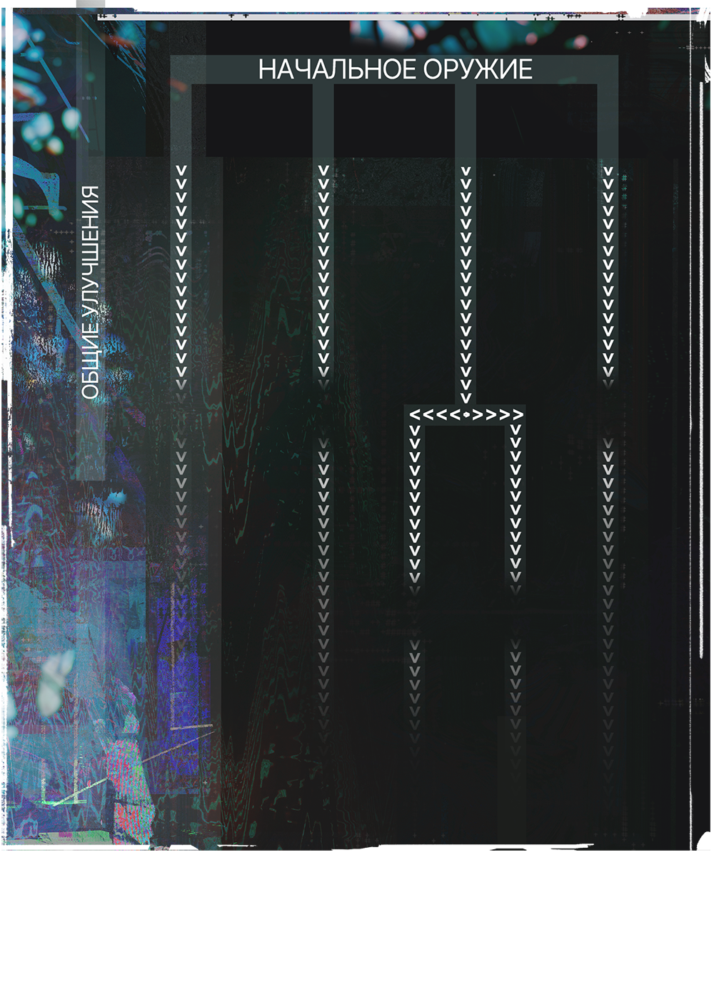

Надев mr-очки и подключившись к IsOnline, персонаж игрока (ПИ) начинает действовать сразу в двух реальностях - физической и виртуальной. Виртуальных существ можно представить как “призраков”, наложенных на реальный мир. Их нельзя задеть обычным способом, только виртуальным оружием. Это оружие отображается как голограмма и существует только в игровом слое.
Виртуальные существа могут атаковать вас, Естественно они не могут нанести вам физический урон, но их атаки снижают показатель прочности вашего виртуального оружия. Когда прочность исчерпана, вы не можете продолжать бой, пока не восстановите её.
При этом любые действия в IsOnline требуют реальных движений и жестов. Виртуальные атаки, взаимодействие с интерфейсом и виртуальными объектами — всё выполняется телом и фиксируется системой с точностью до сантиметра через узлы MRnet.
Каждый игрок получает на выбор одно из четырех видов начального виртуального оружия, которое можно в дальнейшем улучшать, тратя очки накопленного опыта. Это оружие нельзя передавать и оно навсегда закреплено за вашим mr-очками. Виртуальное оружие это единственный способ взаимодействовать с виртуальными противниками.
